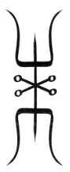

Symbol Grimoire
Hekate's Crossroads Sigil
Hekate's crossroads sigil is a devotional glyph drawn to invoke her presence and mark a practitioner's commitment to her service.

Overview
The design joins two trident shapes with a connecting vertical shaft and a crossing X at its center. The paired tridents represent command over the upper and lower worlds, and the shaft between them shows Hekate's freedom to move between both without hindrance. The crossing X marks the earth's surface and the meeting point of opposing forces, the place where she becomes present.
Ritual Use
The sigil is drawn slowly and deliberately during a private working held at a liminal hour such as dawn, dusk, or midnight. Once completed, the practitioner marks it with their own initials or personal sign on all four sides to encircle it with their intention, then covers it with both hands and speaks a devotional address to Hekate aloud three times. The sigil is then kissed and burned, and its ash is kept as a sacred remainder for later use.